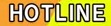

Janeiro 2023Janeiro 2023
Janeiro 2023Janeiro 2023Sinopse: Apesar de sua suposta incapacidade com a magia regular, a princesa Anisphia desafia as expectativas da aristocracia ao desenvolver a "magologia", uma teoria mágica única baseada em memórias de sua vida passada. Um dia, ela testemunha a brilhante nobre, Eufilia, injustamente ser despojada de seu título como a próxima monarca do reino. É quando Anisphia elabora um plano para ajudar Euphyllia a recuperar seu bom nome – o que de alguma forma os envolve vivendo juntos e pesquisando magia!
Gênero: Comédia, Fantasia, Isekai
Diretor: Tamaki Shingo (Ahiru no Sora, Aho Girl)
Estúdio: (Domestic no Kanojo, Aho Girl, Ahiru no Sora)
Estréia: 04/01
Episódios: 12
Comentários: V: -----


Vídeos
Trailer 1
Trailer 2
Trailer 3
Sinopse: Himuro-kun é um descendente vivo da Mulher Neve do folclore japonês. Mas sempre que ele está perto de sua excêntrica, mas gentil colega, Fuyutsuki-san, ele congela totalmente! Apesar da tempestade de neve de amor que reina em seu coração, e sua completa falta de noção, ele dará um passo à frente ou permanecerá congelado no lugar?
Gênero: Comédia, Romance, Slice of life, sobrenatural
Diretor: Mankyuu (Idolmaster Series)
Estúdio:  (Rikei ga koi, Tenkuu Shipan, Grand Blue)
(Rikei ga koi, Tenkuu Shipan, Grand Blue)
Estréia: 04/01
Episódios: 12
Comentários: V: Representação profunda dos otakus com sua primeira paixão.

Vídeos
Teaser
Trailer
Sinopse: Tomo e Jun são amigos desde a infância, mas durante o ensino médio Tomo decidiu que queria ser algo a mais para ele. O problema, no entanto, é que devido ao seu comportamento explosivo e longos anos de treinamento em karatê juntos fizeram com que Jun a enxergasse com um garoto, tratando Tomo como um de seus amigos homens.
Para mudar isso, Tomo decide que irá fazê-lo reconhecer sua feminilidade e perceber que ela também é uma garota e está apaixonada por ele.
Gênero: Comédia, Romance, Escolar
Diretor: Nanba Hitoshi (Golden Kamuy, Fate/Grand Order)
Estúdio: (Gunjou no Fanfare, Release the Spyce)
Estréia: 05/01
Episódios: 12
Comentários: V: -----
Vídeos
Trailer
Sinopse: Enquanto o mestre assassino Usui Yuen investiga uma série de assassinatos feitos no grande clã samurai, o Satsuma, ele encontra Kurima Raizo, membro e sobrevivente de um dos ataques. Juntos, eles descobrem que a verdadeira natureza desses assassinatos é maior do que os recursos roubados. À medida que se aproximam da verdade, eles sairão vivos para se vingar?
Gênero: Ação, Histórico
Diretor: Fujimori Masaya (Kemono Jihen, Shuumatsu no Izetta)
Estúdio:  (Honzuki, Kemono Jihen, Kakushigoto)
(Honzuki, Kemono Jihen, Kakushigoto)
Estréia: 05/01
Episódios: 12
Comentários: V: Anime histórico, por favor não me decepcione.
Vídeos
Trailer 1
Trailer 2
Trailer 3
Sinopse: Mahiro Oyama levava sua vida de otaku recluso e jogador de games eróticos de forma pacifica, até que em uma bela manhã acordou no corpo de uma garota. Ao tentar entender o que havia acontecido, Mahiro descobre que foi vítima de um experimento feito pela sua genial irmãzinha, Mihari, que decidiu testar um nova fórmula em seu corpo sem o seu consentimento.
Com a desculpa de que aquela podia ser a sua 2º chance de voltar a sociedade usando de sua fofura, Mihari tenta convencer Mahiro a aproveitar a oportunidade, enquanto continua seus experimentos. Agora cabe a Mahiro encontre uma forma de voltar ao seu antigo corpo e resgatar a sua vida de NEET.
Gênero: Comédia, Slice of Life
Diretor: Fujii Shingo (Primeiro Trabalho)
Estúdio:  (Mushoku Tensei)
(Mushoku Tensei)
Estréia: 05/01
Episódios: 12
Comentários: V: Crimes serão cometidos.
Vídeos
Trailer 1
Trailer 2
Sinopse: Em um mundo onde as guerras se resolvem com o uso de espiões, Klaus é um agente com uma taxa de 100% de sucesso em missões… e dono de uma personalidade difícil de lidar. Entretanto, sua notável reputação é colocada em risco quando recebe uma missão com 90% de chance de fracasso, sendo que tudo o que ele tem que fazer é lidar com 7 novas espiãs inexperientes.
Gênero: Ação, Comédia, Mistério, Romance
Diretor: Kawaguchi Keiichirou (Higurashi Gou, Ochikobore Fruit Tart)
Estúdio:  (Kumichou Musume, Bokutachi no Remake, Island)
(Kumichou Musume, Bokutachi no Remake, Island)
Estréia: 05/01
Episódios: 12
Comentários: V: -----
Vídeos
Trailer
Sinopse: Depois que Hiraku morre de uma doença grave, Deus o traz de volta à vida, devolve sua saúde e juventude e o envia para um mundo de fantasia de sua escolha. A fim de desfrutar de sua segunda chance, Deus lhe concede a ferramenta agrícola toda-poderosa! Veja como Hiraku cava, corta e ara em outro mundo nesta fantasia agrícola descontraída!
Gênero: Fantasia, isekai, Slice of life
Diretor: Kuraya Ryouichi (Tsugumomo)
Estúdio: (Rikei ga koi, Tenkuu Shipan, Grand Blue)
Estréia: 06/01
Episódios: 12
Comentários: V: isekai do globo rural.
Vídeos
Trailer 1
Trailer 2
Sinopse: Em um mundo onde as fadas são compradas e vendidas pelo maior lance, os humanos não são tão amigáveis com o povo feérico. Mas amizade é exatamente o que Anne Halford busca com Challe, sua nova fada guarda-costas, embora ele não goste muito da ideia.
Como seu novo mestre, Anne o incumbe de escoltá-la por uma área particularmente perigosa, mas com um guarda-costas relutante e ansioso para escapar de uma vida de servidão, ela terá que lidar com muito mais do que esperava...
Gênero: Aventura, Fantasia, Romance
Diretor: Suzuki Youhei (Maiko-san, Planet with, Shimoneta)
Estúdio:  (Dungeon ni deai, Blue Reflection Ray, To aru series)
(Dungeon ni deai, Blue Reflection Ray, To aru series)
Estréia: 06/01
Episódios: 12
Comentários: V: Clube das Winx ao contrário.
Vídeos
Teaser
Sinopse: As grandes bestas criaram a terra, mas os humanos a roubaram. Irritadas, as bestas começaram a comer humanos, que por sua vez chamaram os deuses para lutar contra as bestas. Na era da espada, heróis e mitologia, bestas gigantes são caçadas por humanos para o lucro.
Jiro, que ganha a vida caçando bestas, encontra Kuumi, que está sendo perseguido por alguém, e nesse momento decide salvá-la. À medida que os rumores se espalham sobre a humanidade e um experimento misterioso, juntos eles procuram descobrir os segredos do mundo.
Gênero: Fantasia
Diretor: Oguro Akira (Namu Amida Butsu! Utena)
Estúdio:  (Peach Boy Riverside, Dolls Frontline)
(Peach Boy Riverside, Dolls Frontline)
Estréia: 07/01
Episódios: 12
Comentários: V: -----
Vídeos
Teaser
Trailer
Sinopse: Mahiru é uma bela garota cujos colegas de classe a chamam de "anjo". Ela não é apenas uma atleta estrela com notas perfeitas – ela também é linda. Amane, um cara comum e auto-admitido, nunca pensou muito na beleza divina, apesar de frequentar a mesma escola.
Tudo muda, no entanto, quando ele vê Mahiru sentada sozinha em um parque durante uma tempestade. Assim começa a estranha relação entre este par incrivelmente improvável!
Gênero: Comédia, Romance
Diretor: Imaizumi Ken`ichi (Kingdom, Katekyou Hitman Reborn)
Estúdio:  (Koi wa Sekai, Hige o Soru, Mamahaha)
(Koi wa Sekai, Hige o Soru, Mamahaha)
Estréia: 07/01
Episódios: 12
Comentários: V: -----
Vídeos
Trailer
Sinopse: Vash the Stampede é um pistoleiro procurado com o hábito de transformar cidades inteiras em escombros. Seu caminho de destruição atravessa as terras devastadas de um planeta desértico. Curiosamente, para um bandido tão infame, não há provas de que ele tenha tirado uma vida. Na verdade, ele é um pacifista. Definitivamente, há muito mais em Vash do que sua reputação deixa transparecer.
Gênero: Ação, Comédia, Drama, Aventura, Ficção Científica
Diretor: Mutou Kenji (Primeiro Trabalho)
Estúdio: (Beastars, Houseki no Kuni, Black Bullet)
Estréia: 07/01
Episódios: 12
Comentários: V: -----
Vídeos
Trailer 1
Trailer 2
Trailer 3
Sinopse: Kazuki Kurusu é um empreiteiro criminoso / coordenador que vive com seu melhor amigo, Rei Suwa, um assassino profissional que foi criado desde a infância para ser um assassino contratado.
Kazuki é extrovertido e adora jogos de azar e mulheres, enquanto Rei é um homem de poucas palavras que passa seu tempo livre jogando videogames. Um dia, os dois amigos acabam cuidando de Miri Unasaka, uma menina de quatro anos cujo pai é um chefe da máfia, depois que Miri acidentalmente entra em um tiroteio em um hotel enquanto procura por seu pai.
Gênero: Comédia
Diretor: Asai Yoshiyuki (Charlotte, Fate/apocrypha, Kamisama ni natta hi)
Estúdio:  (Charlotte, Kamisama ni natta hi, paripi koumei)
(Charlotte, Kamisama ni natta hi, paripi koumei)
Estréia: 07/01
Episódios: 12
Comentários: V: Spy x family de baixo orçamento.
Vídeos
Trailer
Sinopse: A humanidade foi expulsa da Terra por seres mecânicos de outro mundo. Em um esforço final para retomar o planeta, a resistência humana envia uma força de soldados androides para destruir os invasores, os androides 2B, 9S e A2.
Agora, uma guerra entre máquinas e androides se enfurece em... Uma guerra que em breve poderá revelar uma verdade há muito esquecida do mundo.
Gênero: Ação, Ficção Científica
Diretor: Masuyama Ryouji (Blend S)
Estúdio:  (Kaguya-sama, SAO, 86)
(Kaguya-sama, SAO, 86)
Estréia: 07/01
Episódios: 12
Comentários: V: Bastante hype pelo jogo, veremos se será tudo isso mesmo.
Vídeos
Trailer 1
Trailer 2
Sinopse: Após cair de um penhasco, Mitsuha Yamano foi transportado para um mundo de fantasia com temática de Europa medieval.
Durante uma luta que quase lhe custou a vida, Mitsuha descobriu que tem a capacidade de viajar entre os dois mundo como bem entender.
Percebendo a grande oportunidade que recebeu, ela decide usar seus novos poderes para alcançar seu tão aguardado sonho de se aposentar cedo.
Gênero: Fantasia, Isekai
Diretor: Tamada Hiroshi (Primeiro trabalho)
Estúdio:  (Aharen-san, Ura Sekai Picnic, Nekopara(2020))
(Aharen-san, Ura Sekai Picnic, Nekopara(2020))
Estréia: 08/01
Episódios: 12
Comentários: V: -----
Vídeos
Teaser
Trailer
Sinopse: Wisteria é uma órfã que viveu sua vida de forma solitária e sombria até conhecer Marbas, um homem meio-fera que vagava sem um real propósito. Juntos os dois encontraram um motivo para serem felizes, decidindo então viajar pelo império britânico em busca de um lugar onde possam viver em paz.
Gênero: Fantasia
Diretor: Yamamoto Yasutaka (Nekopara, Noblesse)
Estúdio:  (ultra maniac, offside)
(ultra maniac, offside)
Estréia: 08/01
Episódios: 12
Comentários: V: A bela e a fera de baixo orçamento.
Vídeos
Trailer 1
Trailer 2
Sinopse: A história acompanha Saitou, um faz-tudo que foi reencarnado em um mundo de fantasia. Em busca de se aventurar em dungeons, Saitou decide criar uma equipe, mas as coisas não saem como ele esperava.
Agora acompanhado de uma bela guerreira, de um mago que esquece seus feitiços e uma fada mão de vaca, Saitou começa sua nova vida em um outro mundo, tentado ao máximo aproveitar sua nova chance.
Gênero: Aventura, Fantasia, Comédia, Isekai
Diretor: Kubooka Toshiyuki (Majo no Tabitabi, Hakurana Recieve, Berserk Golden Age)
Estúdio:  (Tensei Shitara Ken, Tsukimichi, Hakurana Recieve)
(Tensei Shitara Ken, Tsukimichi, Hakurana Recieve)
Estréia: 08/01
Episódios: 12
Comentários: V: -----
Vídeos
Trailer 1
Trailer 2
Sinopse: O exorcista Haruyoshi Kuga, chamado de gênio incomparável, é traído pela Corte Imperial e está prestes a morrer. Resolvendo ser feliz em sua próxima vida, ele usa uma técnica secreta de reencarnação que ele criou e reencarna em outro mundo. E assim ele recebe um novo nome, Seika, e uma nova vida."O que me faltou na minha vida anterior foi astúcia. Nesta vida, serei mais calculista e encontrarei a felicidade".
Com as técnicas exorcistas mais fortes e demônios fortes trabalhando com ele, o que está por vir para ele? A vida pacífica que ele quer, ou...
Este é o início de uma história que ninguém nunca viu antes: a história do exorcista mais forte em um mundo de fantasia.
Gênero: Fantasia, Isekai
Diretor: Shibuya Ryousuke (Primeiro trabalho)
Estúdio: (Uramichi onisan, Boku no Kanojo)
Estréia: 08/01
Episódios: 12
Comentários: V: De fato "uma histórica nunca antes vista" (risos).
Vídeos
Teaser
Trailer
Sinopse: Sonoda Michi planejava se aposentar do judô após não conseguir um resultado satisfatório no campeonato nacional do ensino fundamental. Entretanto, sua melhor amiga, Sanae Takigawa, e sua mais recente rival, Eien Hyoura, a convencem de continuar a praticar o esporte no ensino médio, dando os incentivos necessários para Michi não abandonar seu sonho.
Gênero: Slice of life, Esporte, Judô
Diretor: Ogiwara Takeru (Primeiro trabalho)
Estúdio:  (jouran)
(jouran)
Estréia: 09/01
Episódios: 12
Comentários: V: -----
Vídeos
Trailer 1
Trailer 2
Sinopse: Finn, que vivia livremente nas ruas, partiu para um cassino com o objetivo de fazer fortuna. Uma vez lá, Finn encontrou uma perseguição de carro e um tiroteio sangrento causado por um cartão da "sorte" de um homem.
Existe um conjunto de 52 cartas com o poder de conceder diferentes poderes e habilidades sobre-humanas àqueles que as possuem. Existe um grupo secreto de jogadores chamado High Card, que receberam ordens diretas do rei de Fourland para coletar as cartas que foram espalhadas por todo o reino, enquanto trabalhavam como funcionários da fabricante de carros de luxo. Escoltado para se tornar o quinto membro do grupo, Finn logo se junta aos jogadores em uma missão perigosa para encontrar essas cartas.
Gênero: Ação, sobrenatural
Diretor: Wada Jun`ichi (Sakugan, Caligula)
Estúdio:  (Tekken: bloodline, Major)
(Tekken: bloodline, Major)
Estréia: 09/01
Episódios: 12
Comentários: V: YuGi-Oh, porém sério.
Vídeos
Trailer 1
Trailer 2
Sinopse: A história acompanha Kunato Hyouma, um jovem exorcista que carrega um pesado ódio por tsukumogamis devido a uma perda que teve. Para tentar acalmar o coração de Kunato, seu avô decide o enviar para a casa de Botan, uma garota chinesa que vivem junto de 6 tsukumogamis.
Vivendo com uma família que ele julga ser inadmissível, Kunato precisa aprender a lidar com seu sentimentos e descobrir os reais significados das atividades de seu clã de exorcistas.
Gênero: Ação, sobrenatural
Diretor: Kimura Ryuuichi (Kemono Friends 2, Aikatsu Planet, Sakura Taisen)
Estúdio:  (Iruma-kun, Tier & Bunny 2, Koukyuu no Karasu)
(Iruma-kun, Tier & Bunny 2, Koukyuu no Karasu)
Estréia: 10/01
Episódios: 12
Comentários: V: Mistura de Bleach com Kimetsu com o prota de Jujutsu.
Vídeos
Trailer
Sinopse: O Japão está repleto de monstros misteriosos chamados ayakashi, mas eles têm uma força ninja exorcista especial para combater a ameaça! O jovem ninja exorcista Matsuri passa seus dias lutando contra ayakashi para proteger sua amiga de infância Suzu. Mas quando um gato ayakashi chamado Shirogane aparece, as coisas ficam de cabeça para baixo!
Gênero: Ação, Comédia, Romance, Ecchi
Diretor: Akitaya Noriaki (Slow Loop, Ore o Suki, Bakuman)
Estúdio:  (Slow Loop, Strike the Blood, Ore o Suki)
(Slow Loop, Strike the Blood, Ore o Suki)
Estréia: 10/01
Episódios: 12
Comentários: V: -----
Vídeos
Trailer
Sinopse: Depois de viver uma vida dedicada a servir seu país e seu povo, o desejo de Inglis de se livrar do fardo de um rei e treinar foi realmente ouvido, mas como uma bela garota! Renascida em um futuro distante como filha de renomados cavaleiros, Inglis agora pode se concentrar em dominar as artes marciais. Um desejo foi concedido, e Inglis estará na linha de frente realizando o sonho de se tornar o cavaleiro mais forte.
Gênero: Ação, Fantasia
Diretor: Kuzuya Naoyuki (Bikini warriors)
Estúdio: (Fairy Ranmaru)
Estréia: 10/01
Episódios: 12
Comentários: V: Genérico até a alma.
Vídeos
Trailer 1
Trailer 2
Sinopse: Junta Shiraishi tem apenas um objetivo: experimentar a juventude ao máximo! Mas isso é mais fácil dizer do que fazer. Junta é tão socialmente invisível que as pessoas na escola juram que ele faltou às aulas, mesmo quando ele está sentado logo atrás delas.
Tudo muda quando Junta encontra Nagisa Kubo. Ela é a única pessoa que presta atenção em Junta, e suas constantes provocações certamente transformarão a vida tranquila de Junta de cabeça para baixo, porque Kubo não o deixará ser invisível!
Gênero: Comédia, Romance, Escolar
Diretor: Koga Kazuomi (Kanojo Okarishimazu, Ganbare Douki-chan)
Estúdio:  (Do it Yourself, Gleipnir, Gamers)
(Do it Yourself, Gleipnir, Gamers)
Estréia: 10/01
Episódios: 12
Comentários: V: A rota do Otaku virando social.
Vídeos
Trailer 1
Trailer 2
Sinopse: Mukouda Tsuyoshi não era nada de especial no Japão moderno, então quando ele foi convocado para um mundo de esgrima e feitiçaria, ele pensou que estava pronto para a aventura de uma vida. Pena que o reino que o convocou só o pegou por engano! Não só ele não era um dos três heróis convocados, mas suas estatísticas eram horríveis em comparação com as deles. Imediatamente ele saiu para fazer o seu próprio caminho neste outro mundo. A única coisa em que Mukouda pode confiar é sua habilidade única: o "Supermercado Online", uma habilidade que lhe permite comprar produtos modernos em um mundo de fantasia.
É inútil para o combate, mas se ele jogar suas cartas direito, ele poderia levar uma vida confortável, talvez?
Gênero: Aventura, Fantasia, Isekai
Diretor: Matsuda Kiyoshi (Re-Main, Kakegurui XX)
Estúdio:  (Dance dance danseur, kakegurui, Re-Main)
(Dance dance danseur, kakegurui, Re-Main)
Estréia: 10/01
Episódios: 12
Comentários: V: Nem a Amazon escapa de um Isekai.
Vídeos
Trailer 1
Trailer 2
Sinopse: Em outro mundo, um Mar de Neve cada vez maior engoliu a superfície do planeta. As pessoas lutam para sobreviver vivendo em torno das raízes de uma enorme Árvore Orbital, cujos galhos se espalham para a Membrana Celestial acima do solo. A mudança chega a este mundo depois que Kaina, um menino da Membrana Celestial, encontra uma garota da superfície chamada Ririha.
Gênero: Aventura, Fantasia, Ficção Científica
Diretor: Andou Hiroaki (Listeners, Aijin)
Estúdio:  (Sidonia no Kishi, Kuutei Dragons, Aijin)
(Sidonia no Kishi, Kuutei Dragons, Aijin)
Estréia: 12/01
Episódios: 12
Comentários: V: -----
Vídeos
Trailer
Sinopse: O mundo depois da última guerra. A terra está coberta de floresta negra, e as pessoas foram infectadas com um patógeno pirogênico humano que faz com que seus corpos queimem quando se aproximam de um incêndio natural. O fogo neste mundo é reunido pela caça de bestas negras que vivem na floresta, os Demônios do Fogo.
Touko, uma garota que cresceu em uma aldeia, e Koushi, um ex-aluno da capital. Seu encontro, que nunca deveria acontecer, muda o destino do mundo.
Gênero: Fantasia, Histórico
Diretor: Nishimura Junji (Extreme Hearts, Vlad Love, Basilisk)
Estúdio: (Mars Red, Platinum End)
Estréia: 14/01
Episódios: 12
Comentários: V: -----
Vídeos
Teaser
Sinopse: A história acompanha uma agência cujos membros são portadores de poderes sobrenaturais inspirados em figuras literárias, a Agência de Detetives Armados, que também enfrentam com poderes os membros da Máfia do Porto e resolvem todos os tipos de crimes e problemas.
Gênero: Ação, Mistério, Sobrenatural
Diretor: Igarashi Takuya (Bungo Stray Dogs, Soul Eater)
Estúdio:  (Boku no Hero, Bungo Stray Dogs, Soul Eater)
(Boku no Hero, Bungo Stray Dogs, Soul Eater)
Estréia: 04/01
Episódios: 12
Comentários: V: -----
Vídeos
Trailer 1
Trailer 2
Sinopse: A história acompanha Minato Narumiya, um jovem prodígio no arco e flecha que é recrutado pelo clube da escola em seu primeiro ano do ensino médio. Porém, ao se deparar com velhos amigos e rivais, Minato acaba encontrando sérios problemas para praticar o esporte, tendo que superar, não só seus rivais, como a si mesmo.
Gênero: Drama, Escolar, Esportes
Diretor: Yamamura Takuya (Tsurune)
Estúdio:  (Kobayashi-san, Violet Evergarden, Koe no Katachi)
(Kobayashi-san, Violet Evergarden, Koe no Katachi)
Estréia: 05/01
Episódios: 12
Comentários: V: -----
Vídeos
Trailer
Sinopse: A história acompanha Bell, um aventureiro subestimado por todos por ser um novato inexperiente, entretanto, aos poucos, Bell vai mostrado uma enorme aptidão como aventureiro, enfrentando desafios cada vez mais difíceis no complexo sistema de labirintos conhecido como Dungeon.
Gênero: Ação, Comédia, Aventura, Fantasia, Romance
Diretor: Tachibana Hideki (Dungeon ni deai, To aru Series)
Estúdio: (Dungeon ni deai, One Punch Man 2, To aru series)
Estréia: 05/01
Episódios: 12
Comentários: V: -----
Vídeos
Trailer
Sinopse: "Uma garota em uma série mais baixa só me fez chorar!"
Um dia, Senpai visita a biblioteca depois da escola e se torna alvo de uma caloura super sádica! O nome da garota que provoca, atormenta e tenta Senpai é "Nagatoro!" Ela é irritante, mas adorável. É doloroso, mas ele ainda quer estar ao lado dela.
Gênero: Comédia, Romance, Slice of Life
Diretor: Ushiro Shinji (Youkai Watch)
Estúdio:  (Komi-san, Summertime Render, Odd Taxi)
(Komi-san, Summertime Render, Odd Taxi)
Estréia: 08/01
Episódios: 12
Comentários: V: Vaza daqui.
Vídeos
Trailer 1
Trailer 2
Sinopse: Ryoma não teve sorte em sua vida anterior. Mas três divindades decidem dar a ele uma segunda chance em um mundo de fantasia e magia.
Gênero: Aventura, Fantasia, Isekai, Slice of Life
Diretor: Yanase Yuuji (Leadale no Daichi Nite, Kamitachi ni Hirowareta, Isekai Smarthphone)
Estúdio:  (100-man, Kamitachi ni Hirowareta, Uchi no ko no tame naraba)
(100-man, Kamitachi ni Hirowareta, Uchi no ko no tame naraba)
Estréia: 08/01
Episódios: 12
Comentários: V: A mimir.
Vídeos
Teaser
Trailer
Sinopse: Anos Voldigord era um tirânico Rei Demônio que erradicou humanos, espíritos e até mesmo os deuses, mas se cansou da guerra eterna e reencarnou com sonhos de um mundo pacífico. No entanto, o que o esperava na reencarnação depois de 2000 anos eram descendentes que se tornaram muito fracos depois de estarem acostumados à paz, e todos os tipos de magia que se deterioraram ao extremo.
Gênero: Ação, Fantasia, Escolar
Diretor: Tamura Masafumi (Sekai Saikou no Ansatsusha, Kenja no Mago)
Estúdio: (Maou Gakuin, Meikyuu Black Company, Masamune-kun no Revenge)
Estréia: 08/01
Episódios: 12
Comentários: V: Retorno do Arnaldo Valdigoldi
Vídeos
Trailer 1
Trailer 2
Sinopse: Takemichi Hanagaki é um freelancer que atingiu os poços absolutos do desespero em sua vida. Ele descobre que a única namorada que ele já teve em sua vida que ele namorou no ensino médio, havia sido morta pela implacável Tokyo Manji Gang.
Um dia depois de ouvir sobre sua morte, ele está de pé na plataforma da estação e acaba sendo empurrado para os trilhos por uma manada de pessoas. Ele fecha os olhos pensando que está prestes a morrer, mas quando ele abre os olhos de volta, ele de alguma forma voltou no tempo 12 anos.
Gênero: Ação, Drama, Escolar
Diretor: Hatsumi Kouichi (Deadman Wonderland, Tokyo Revengers, Ao no Exorcist)
Estúdio:  (Build Divide, Tribe Nine, Bastard!!(2022))
(Build Divide, Tribe Nine, Bastard!!(2022))
Estréia: 08/01
Episódios: ??
Comentários: V: Tokyo revoltadinhos novamente, estou caindo fora.

Vídeos
Trailer
Sinopse: Quando era uma criança, Kotoko foi sequestrada por um youkai. Esses espíritos a transformaram numa poderosa intermediária entre o mundo espiritual e o mundo humano, mas esse poder teve um preço: um olho e uma perna.
Agora, anos depois, ela procura por yokais perigosos, enquanto desenvolve sentimentos por Kuro, um jovem que ganhou poderes de cura, após um incidente com um yokai. O jovem fica surpreso quando Kotoko pede que ele se junte a ela para monitorar yokais renegados, e assim preservar a fina linha entre a realidade e o sobrenatural.
Gênero: Comédia, Mistério, Romance, Sobrenatural
Diretor: Gotou Keiji (Kyokou Suiri, Kishin Taisen)
Estúdio:  (Golden Kamuy, Fumetsu no anata e, D-frag)
(Golden Kamuy, Fumetsu no anata e, D-frag)
Estréia: 09/01
Episódios: 12
Comentários: V: -----
Vídeos
Trailer 1
Trailer 2
Trailer 3
Sinopse: Situado no Japão moderno, esta é a história do caçador de vampiros Ronaldo, que entra no castelo de Draluc, o pai imortal de todos os vampiros. Draluc, no entanto, é na verdade o vampiro mais fraco de todos, e ele constantemente morre e se transforma em cinzas! As crianças desaparecidas já o mataram várias vezes e destruíram seu castelo também, então ele vai morar com Ronaldo em seu escritório em Shin-Yokohama.
Draluc e Ronaldo trabalham juntos para resolver incidentes relacionados a vampiros em todo o Japão, mas Draluc sempre morre no pior momento...
Gênero: Comédia, Sobrenatural, Vampiros
Diretor: Koujina Hiroshi (Kyuuketsuki Sugu Shinu, Hunter x Hunter (2011))
Estúdio:  (Overlord, Sonny Boy, Hunter x Hunter (2011))
(Overlord, Sonny Boy, Hunter x Hunter (2011))
Estréia: 09/01
Episódios: 12
Comentários: V: -----
Vídeos
Trailer
Sinopse: O jovem Thorfinn sonha em deixar para trás o clima frio da Islândia e se aventurar no grande desconhecido. Mas quando as velas vikings aparecem no horizonte, o jovem é recrutado para uma vida de violência e brutalidade nas mãos do impiedoso Viking Askelaad. Com nada mais para ele além de vingança, Thorfinn jura vingança contra o homem que matou sua família.
Gênero: Ação, Aventura, Drama, Histórico
Diretor: Yabuta Shuuhei (Vinland Saga, InuYashiki)
Estúdio: (Shingeki Final Season, Chainsawman, Jujutsu Kaisen)
Estréia: 10/01
Episódios:??
Comentários: V: Agora que a história começa.

Vídeos
Trailer 1
Trailer 2
Sinopse: Ela pode ser nova nos jogos, mas Maple encontrou o segredo da invencibilidade! Basta colocar todos os seus pontos de habilidade na defesa até que você não possa sequer se mover. Isso funciona, certo? Ela não quer sentir nenhuma dor no jogo VRMMO que começou a jogar e, de alguma forma, funciona melhor do que qualquer um esperava.
Gênero: Ação, Aventura, Comédia, Fantasia, Slice of Life
Diretor: Oonuma Shin (Fate/Kaleid, Kimi to Boku no Saigo, Rakudai Kishi)
Estúdio: (Maou Gakuin, Meikyuu Black Company, Masamune-kun no Revenge)
Estréia: 11/01
Episódios: 12
Comentários: V: -----
Vídeos
Trailer 1
Trailer 2
Sinopse: O estudante do ensino médio Hiiragi Seiichi é intimidado por seus colegas por ser um "perdedor". Um dia, toda a sua escola é repentinamente transportada para um mundo de espadas e feitiçaria semelhante a um videogame. Quando ele acidentalmente come "o Fruto da Evolução", sua vida como um "vencedor" de sucesso começa.
Gênero: Aventura, Fantasia, Romance, Isekai
Diretor: Fukase Shigeru (Shin no Nakama)
Estúdio:  (Shinka no mi)
Estréia: 14/01
Episódios: 12
Comentários: V: O retorno do isekai da macaca waifu.
Vídeos
Trailer 1
Trailer 2